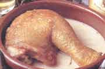

Menú A
GALLINA CON PISTO

Preparación:
- Limpiar la gallina y trocearla en pedazos pequeños.
- Retirar la piel a los tomates y la cebolla y trinchar junto con los pimientos.
- Exprimir el limón y reservar el zumo.
- A continuación en una cazuela de barro plana y amplia, con manteca caliente, saltear los pedazos de gallina.
- Salpimentar y rociar con 1 litro de leche.
- Cuando la gallina lleve unos diez minutos hirviendo, añadir la cebolla, el pimiento y los tomates.
- Reducir el fuego, rociar con el vino y el zumo de limón y dejar hasta que la gallina quede tierna y el caldo reducido.